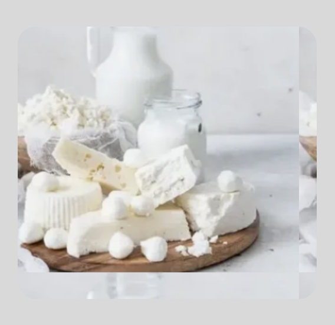

Статья про молочную продукцию

Молоко и молочные продукты — основа сбалансированного рациона. Они содержат значительное количество незаменимых нутриентов, обладают высокой переваримостью.
Взрослому здоровому человеку рекомендуется ежедневно употреблять 2 стакана молока и жидких кисломолочных продуктов, ломтик сыра (20 г), порцию сливочного масла (12 г) и 30 г творога. Употребление молока и молочной продукции ненадлежащего качества может стать причиной возникновения целого ряда заболеваний. В первую очередь — острых кишечных инфекций, так как молочные продукты относятся к скоропортящейся продукции.